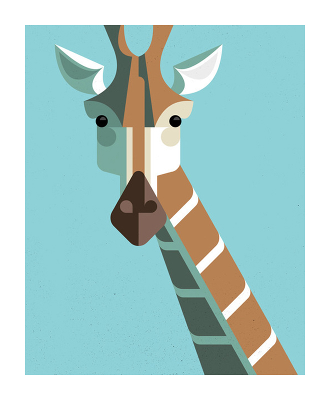

About
I joined Codex in 2018, as I wanted to give myself a new challenge. It has been very interesting seeing the amount of information and knowledge that I am building with my current skill set.
Please click on below image to access my CV:

Front end projects
The front-end project was my first web page I created, using my own CSS and the Skeleton grid framework.
Please click on the below picture to access front-end-projects:

Back end projects
The back-end project included Javascript(JS) that I had previously completed in the bootcamp. Then I have added Test Drive Development(TDD) method to write tests for those functions.
Please click on the picture below to access the back-end projects:
